51:22 · 30 OPERE
Cos'è la poesia? Conferenza di Jorge Luis Borges del 1977.
Il filo del discorso
Borges propone di intendere la poesia come un’esperienza che nasce nell’incontro tra un testo e chi lo legge. Il libro chiuso è un oggetto; ogni lettura lo riattiva e lo modifica, perché anche il lettore cambia. Il linguaggio stesso appare già una creazione estetica: la prosa apparentemente comune, un’ipallage di Carducci e il cammino di Enea con la Sibilla mostrano come le parole organizzino percezioni simultanee. L’idea platonica della creazione come ricordo accompagna poi un invito pedagogico: incontrare direttamente i testi, cercarvi felicità e lasciare da parte quelli che, in quel momento, non parlano al lettore. Il centro della conferenza è il confronto tra il sonetto di Quevedo in memoria del duca di Osuna e quello dello specchio di Enrique Banchs. Nel primo Borges sente la poesia concentrarsi nell’ambiguità di pochi versi, pur giudicando freddo l’elogio; nel secondo riconosce un sentimento amoroso diffuso e pudicamente affidato a un oggetto che attende. Il tema dello specchio conduce a Poe. Seguono esempi in diverse lingue, attraverso i quali il relatore distingue l’emozione del suono dalla semplice trasmissione di un significato e riconosce che ogni lingua può generare versi insostituibili. La critica alla storia letteraria separa il piacere erudito dal contatto immediato con un poema, senza trasformarsi qui in un metodo universale obbligatorio. Tre preghiere lette in un racconto di Kipling e la rosa senza perché di Angelus Silesius concludono la riflessione: per Borges l’efficacia poetica può precedere la certezza sulle origini e ogni spiegazione razionale. Questa è una conferenza di Jorge Luis Borges in spagnolo, non un intervento di Dr Divago.
I libri nel discorso
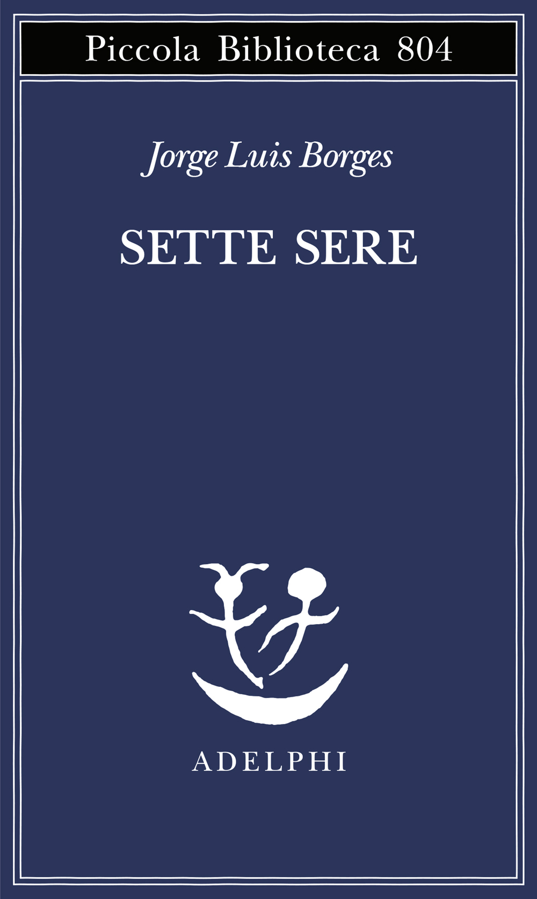
Sette sere (Siete noches)
Identificazione probabile
Copertina: Adelphi, Piccola Biblioteca 804, 2024, a cura di Tommaso Scarano, 189 pagine; ISBN 9788845938962. La poesia inizia a p.105. Prima edizione spagnola Siete noches: 1980.
Copertina autentica Adelphi Sette sere, distinta dal precedente titolo italiano Sette notti e dalla registrazione del 1977. L’estratto editoriale conferma titolo originale, curatore, ISBN e indice. Nessuna coincidenza integrale fra orale e testo riveduto è presunta.
La poesía, conferenza del ciclo 1977 confluito nel volume Siete noches, titolo del volume ricavato dai cataloghi, non pronunciato.
Passaggio 0:05 ↗ · Fonti e libro ↗
Bibbia
Copertina: San Paolo, 2014 · Nuova Versione dai Testi Antichi · edizione di riferimento
La Scrittura dalle interpretazioni infinite, richiamata attraverso Eriugena e un cabbalista non identificato.
Passaggio 0:05 ↗ · Fonti e libro ↗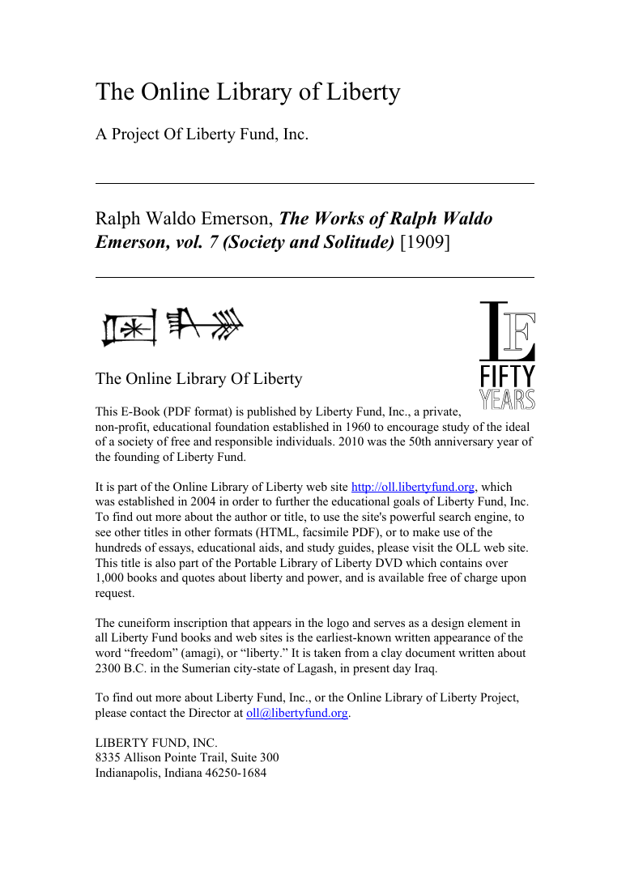
Books (Libri), da Society and Solitude
Identificazione probabile
Prima pagina dell’edizione digitale: Prima pagina dell’edizione digitale Liberty Fund/Online Library of Liberty, generata nel settembre 2011 dal volume VII della Fireside Edition delle Works, Boston/New York 1909. Passo riscontrato a pagina PDF68.
Pagina editoriale digitale autentica con autore e titolo del volume. Non è una copertina esterna né il frontespizio storico del 1909. L’immagine riporta i dati specifici del volume Liberty Fund.
Biblioteca come luogo di spiriti incantati nei libri, parafrasi attribuita a Emerson; Books identificato dal passo.
Passaggio 1:25 ↗ · Fonti e libro ↗
Così parlò Zarathustra
Identificazione probabile
Copertina: Adelphi · Piccola Biblioteca Adelphi · riferimento
Immagine associata all’ISBN di riferimento e controllata visivamente; edizione e traduzione non identificate come quelle citate o lette nel video.
Luna come monaco e gatto maschio, immagine di Nietzsche riconoscibile nel capitolo Della conoscenza immacolata, titolo non nominato.
Passaggio 6:45 ↗ · Fonti e libro ↗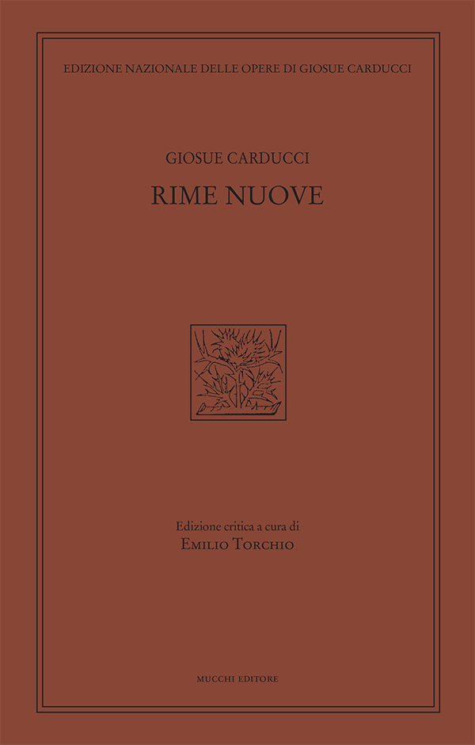
Il bove
Identificazione probabile
Copertina della raccolta: Rime nuove, Mucchi, Edizione nazionale, a cura di Emilio Torchio, ISBN 9788870007398, 709 pagine. Il catalogo dell’editore indica uscita 2017; il repertorio universitario cita 2016.
Copertina autentica della raccolta Rime nuove, non di un volume autonomo Il bove. La differenza 2016/2017 fra repertorio e catalogo è dichiarata; non identifica un’edizione usata da Borges.
Carducci e silenzio verde dei campi: identificazione del verso finale di Il bove.
Passaggio 9:30 ↗ · Fonti e libro ↗
Eneide
Identificazione probabile
Copertina: BUR, 11 settembre 2002, introduzione Antonio La Penna, traduzione e note Riccardo Scarcia, testo latino a fronte, 1168 pagine; ISBN 9788817117418.
Immagine autentica dell’opera, controllata visivamente; l’edizione di riferimento non è attribuita al filmato.
Virgilio, Enea e Sibilla sotto la notte solitaria: Eneide VI,268, titolo ricavato dal passo.
Passaggio 11:03 ↗ · Fonti e libro ↗
Menone
Identificazione probabile
Copertina: Bompiani · Testi a fronte · 2000
Copertina autentica dell’edizione di riferimento, controllata visivamente. Non identifica l’esemplare letto o citato nel video.
Reminiscenza platonica, dottrina richiamata senza dialogo preciso: Menone come riscontro probabile, non titolo pronunciato.
Passaggio 14:03 ↗ · Fonti e libro ↗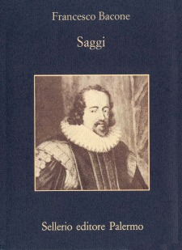
Saggi (Essays)
Identificazione probabile
Copertina: Sellerio, La memoria 356, 1996, traduzione Anna Maria Ancarani, nota Attilio Brilli, 244 pagine; ISBN 9788838910968.
Copertina specifica Sellerio Saggi di Francesco Bacone; data e ISBN verificati nel catalogo. Il rinvio a LVIII è un riscontro della parafrasi, non un titolo pronunciato nel filmato.
Bacon e l’oblio: corrispondenza probabile con Essays LVIII, con formulazione orale diversa dal testo.
Passaggio 14:16 ↗ · Fonti e libro ↗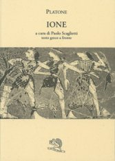
Ione
Identificazione probabile
Copertina: La Vita Felice, Saturnalia 5, 1995, a cura di Paolo Scaglietti, testo greco a fronte, catalogo 128 pagine; ISBN 9788886314268.
Copertina specifica Ione, autore Platone e curatore Paolo Scaglietti leggibili. L’edizione moderna non è attribuita al filmato.
Formula leggero alato sacro: Ione 534b, riferita nel dialogo al poeta e da Borges alla poesia.
Passaggio 15:18 ↗ · Fonti e libro ↗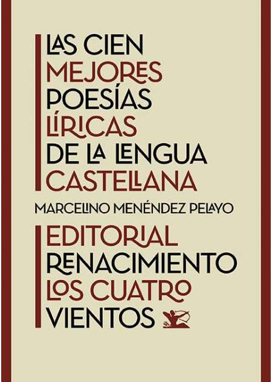
Memoria inmortal de don Pedro Girón, duque de Osuna, muerto en la prisión
Copertina della raccolta: Copertina della raccolta Las cien mejores poesías líricas de la lengua castellana, selezione Menéndez Pelayo, Editorial Renacimiento 2023, ISBN 9788419791818. Non edizione autonoma del componimento.
L’immagine rappresenta l’antologia che contiene i componimenti, non edizioni autonome delle singole poesie.
Sonetto di Quevedo per il duca di Osuna recitato e commentato, incipit Faltar pudo su patria al grande Osuna.
Passaggio 19:52 ↗ · Fonti e libro ↗Bibbia
Copertina: San Paolo, 2014 · Nuova Versione dai Testi Antichi · edizione di riferimento
Luna sanguigna dell’Apocalisse: allusione riconoscibile ad Apocalisse 6,12, distinta dalla bandiera ottomana.
Passaggio 23:10 ↗ · Fonti e libro ↗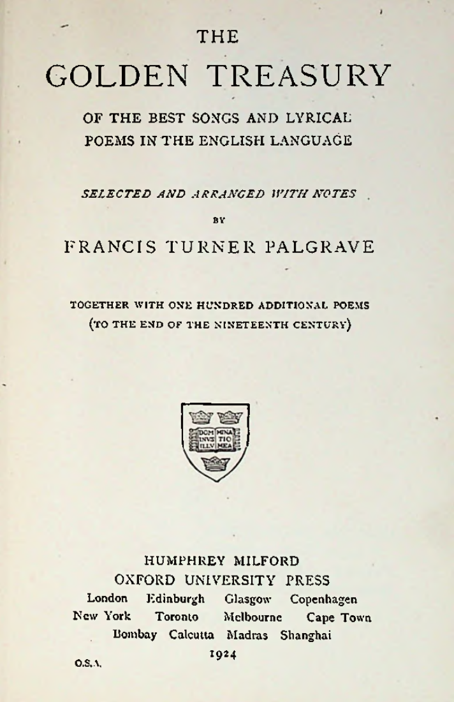
Composed at Neidpath Castle, the Property of Lord Queensberry, 1803
Identificazione probabile
Frontespizio della raccolta: Frontespizio di The Golden Treasury, selezione di Francis Turner Palgrave con cento poesie aggiuntive, Humphrey Milford/Oxford University Press 1924. Il sonetto è n.247 a p.252, pagina PDF274.
Frontespizio della raccolta, pagina 11 della copia digitale. Palgrave è il selezionatore, non l’autore del sonetto. La pagina del testo e la raccolta sono distinte; non è presentata come copertina esterna.
Wordsworth contro Douglas per il taglio degli alberi e chiusa sul Tweed: titolo ricavato dal testo.
Passaggio 26:40 ↗ · Fonti e libro ↗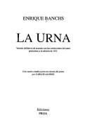
Hospitalario y fiel en su reflejo (il sonetto dello specchio)
Frontespizio della raccolta: Frontespizio della raccolta La urna, Ediciones Proa, Buenos Aires 1999, seconda edizione illustrata da Carlos Alonso, 113 pagine; ISBN 9789879503553. Raccolta originale 1911.
Frontespizio autentico Proa, non copertina esterna e non copertina di un singolo sonetto. Immagine intera 128x178: autore, La urna ed Ediciones Proa leggibili. Nessuna edizione del 1999 è attribuita al discorso del 1977.
Enrique Banchs, sonetto recitato dello specchio ospitale e fedele, designato dall’incipit.
Passaggio 29:07 ↗ · Fonti e libro ↗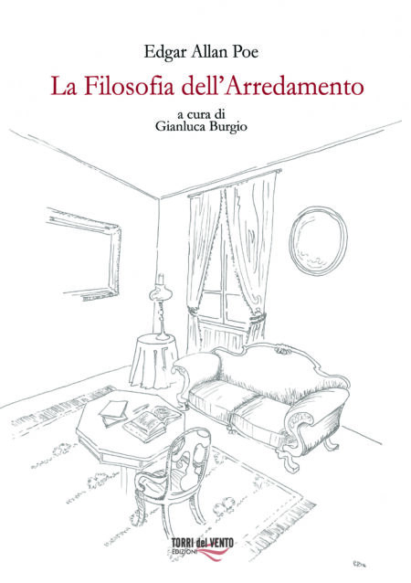
La filosofia dell’arredamento (The Philosophy of Furniture)
Identificazione probabile
Copertina: Torri del Vento, collana i Kumquat, a cura di Gianluca Burgio, nuova edizione. Estratto editoriale con frontespizio disponibile; anno e ISBN non fissati dalla sola pagina commerciale.
Copertina autentica Torri del Vento, autore e curatore leggibili. Il nome del curatore non sostituisce l’autore. La data 2017 nel file di impaginazione dell’estratto non viene trasformata automaticamente in anno bibliografico della ristampa.
Poe, saggio sul decorare le stanze e sul non riflettersi negli specchi: identificazione probabile dal contenuto.
Passaggio 31:22 ↗ · Fonti e libro ↗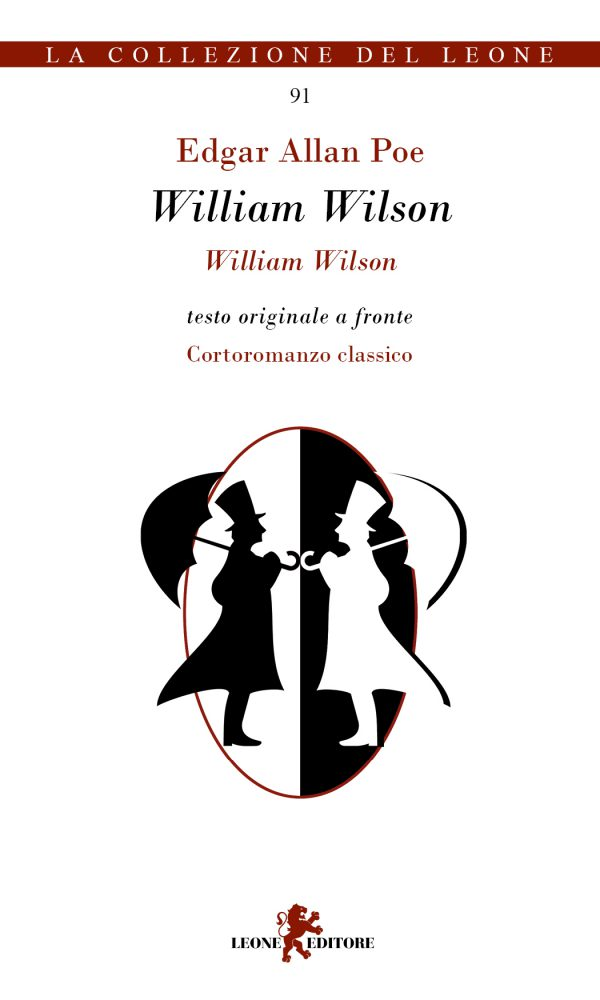
William Wilson
Copertina: Leone Editore, 2017, testo originale a fronte, 84 pagine; ISBN 9788863934243. Prima pubblicazione del racconto 1839, anche se The Gift reca 1840.
Immagine autentica dell’opera, controllata visivamente; l’edizione di riferimento non è attribuita al filmato.
William Wilson di Poe e il doppio, titolo esplicito.
Passaggio 31:45 ↗ · Fonti e libro ↗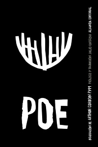
Le avventure di Arthur Gordon Pym (The Narrative of Arthur Gordon Pym of Nantucket)
Copertina: Alianza Editorial, 15 ottobre 2013, traduzione di Julio Cortázar, 288 pagine; ISBN 9788420678320. Copertina dell’edizione spagnola.
Immagine autentica dell’opera, controllata visivamente; l’edizione di riferimento non è attribuita al filmato.
Arthur Gordon Pym e il personaggio terrorizzato dallo specchio, titolo deformato ma riconoscibile.
Passaggio 31:49 ↗ · Fonti e libro ↗Romance del conde Arnaldos
Identificazione probabile
Copertina della raccolta: Copertina della raccolta Las cien mejores poesías líricas de la lengua castellana, selezione Menéndez Pelayo, Editorial Renacimiento 2023, ISBN 9788419791818. Non edizione autonoma del componimento.
L’immagine rappresenta l’antologia che contiene i componimenti, non edizioni autonome delle singole poesie.
Versi sul conte Arnaldos il mattino di San Giovanni, titolo identificato dal testo.
Passaggio 35:47 ↗ · Fonti e libro ↗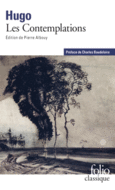
Ce que dit la bouche d’ombre
Identificazione probabile
Copertina della raccolta: Copertina della raccolta Les Contemplations, Folio classique 6678, Gallimard, 15 agosto 2019, edizione di Pierre Albouy. Comprende il libro VI, distinto dalle edizioni scolastiche limitate ai libri I–IV.
Copertina intera Gallimard della raccolta, non di un poema autonomo né dell’edizione abbreviata I–IV. Nome Hugo e titolo della raccolta controllati.
Victor Hugo e l’idra-universo con il corpo stellato: Les Contemplations VI,26, titolo non pronunciato.
Passaggio 36:33 ↗ · Fonti e libro ↗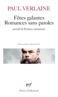
Chanson d’automne
Identificazione probabile
Copertina della raccolta: Fêtes galantes / Romances sans paroles, précédé de Poèmes saturniens, Gallimard, Poésie 93, edizione di Jacques Borel, catalogo 17 maggio 1973, 192 pagine; ISBN 9782070320530.
La copertina autentica dichiara Poèmes saturniens come sezione precedente alle altre due raccolte. Non è una copertina autonoma di Chanson d’automne; la data del catalogo non data la singola tiratura fotografata.
Prima strofa di Chanson d’automne, molto deformata dal riconoscimento in francese.
Passaggio 36:43 ↗ · Fonti e libro ↗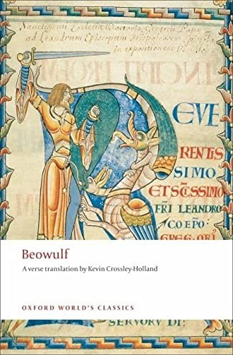
La battaglia di Finnsburh (The Fight at Finnsburh)
Identificazione probabile
Copertina della raccolta: Beowulf: The Fight at Finnsburh, Oxford World’s Classics, 2008, traduzione Kevin Crossley-Holland, introduzione e note Heather O’Donoghue, 176 pagine; ISBN cartaceo 9780199555291. Finnsburh a p.106.
Copertina autentica del volume Oxford che contiene anche The Fight at Finnsburh, verificato nell’indice. Il titolo principale visibile Beowulf non significa che i versi siano attribuiti a quel poema. Traduttore e curatrice non sono gli autori medievali.
Due versi in inglese antico riconoscibili nell’avvio del frammento di Finnsburh, titolo non pronunciato.
Passaggio 37:17 ↗ · Fonti e libro ↗
Romeo e Giulietta
Identificazione probabile
Copertina: BUR / Rizzoli, 2023; traduzione di Carmen Gallo
Copertina dell’edizione con testo inglese a fronte, introduzione, note e nuova traduzione di Carmen Gallo. Edizione scelta come riferimento iconografico; nessuna edizione è confermata nel video. L’identificazione dell’opera nel video resta probabile.
Giogo delle stelle e carne stanca del mondo: Romeo e Giulietta V,3,110–112, titolo non letto.
Passaggio 37:41 ↗ · Fonti e libro ↗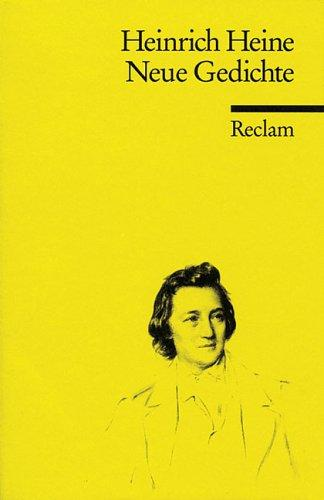
Ich hatte einst ein schönes Vaterland (In der Fremde, III)
Identificazione probabile
Copertina della raccolta: Copertina della raccolta Neue Gedichte, Reclam, Universal-Bibliothek 2241, a cura di Bernd Kortländer, postfazione Gerhard Höhn; ISBN 9783150022412, 330 pagine. Cataloghi indicano 1995/1996, non risolta la tiratura.
Copertina gialla Reclam con Heinrich Heine e Neue Gedichte, ritratto dell’autore. L’immagine non è associata alla diversa selezione Gedichte ISBN 9783150143292. La raccolta originale uscì nel 1844; non si attribuisce questa copertina a Borges.
Versi tedeschi sulla patria come sogno: In der Fremde III di Heine, identificati dall’incipit.
Passaggio 38:24 ↗ · Fonti e libro ↗
Divina Commedia
Copertina: Giunti Barbera · Passepartout, 2021 · edizione di riferimento
Divina Commedia esplicitamente nominata come prova della possibilità poetica dell’italiano.
Passaggio 39:10 ↗ · Fonti e libro ↗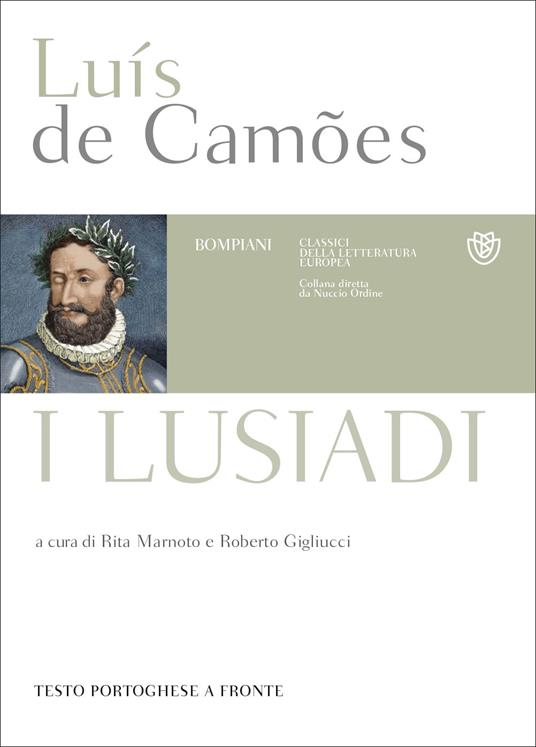
I Lusiadi (Os Lusíadas)
Copertina: Bompiani, Classici della letteratura europea, maggio 2022, a cura di Rita Marnoto e Roberto Gigliucci, testo portoghese a fronte; ISBN 9788830106611. Catalogo editore: 1664 pagine.
Copertina autentica Bompiani scaricata dal servizio immagini IBS; titolo, autore e curatori corrispondono all’ISBN del catalogo editoriale.
Os Lusíadas, titolo esplicito come esempio in portoghese.
Passaggio 39:18 ↗ · Fonti e libro ↗Epístola moral a Fabio
Identificazione probabile
Copertina della raccolta: Copertina della raccolta Las cien mejores poesías líricas de la lengua castellana, selezione Menéndez Pelayo, Editorial Renacimiento 2023, ISBN 9788419791818. Non edizione autonoma del componimento.
L’immagine rappresenta l’antologia che contiene i componimenti, non edizioni autonome delle singole poesie.
Due passi dell’Anonimo sivigliano, attribuito dubitativamente ad Andrada: Epístola moral a Fabio.
Passaggio 40:13 ↗ · Fonti e libro ↗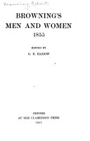
Bishop Blougram’s Apology
Identificazione probabile
Frontespizio della raccolta: Frontespizio di Browning’s Men and Women, 1855, a cura di Grace Eleanor Hadow, Clarendon Press 1911, 350 pagine, esemplare University of Michigan. 1855 è la data della raccolta originaria.
Frontespizio autentico della raccolta, non copertina esterna del 1855. Grace Eleanor Hadow è la curatrice; autore Robert Browning. Riproduzione integrale del frontespizio.
Browning, tramonto e finale di coro di Euripide: Bishop Blougram’s Apology 182–184, titolo non nominato.
Passaggio 41:14 ↗ · Fonti e libro ↗Las cien mejores poesías (líricas) de la lengua castellana
Copertina: Editorial Renacimiento, Los Cuatro Vientos. Serie Mayor 13, 13 novembre 2023, 424 pagine, prologo di Luis Alberto de Cuenca; ISBN 9788419791818. Antologia originaria 1908.
Copertina della selezione di Menéndez Pelayo ristampata nel 2023. Distinta dall’altra antologia omonima selezionata da Luis Alberto de Cuenca: qui de Cuenca è il prefatore.
Menéndez Pelayo e Las cien mejores poesías castellanas, antologia esplicitamente discussa.
Passaggio 42:47 ↗ · Fonti e libro ↗La vaquera de la Finojosa (Moza tan fermosa)
Identificazione probabile
Copertina della raccolta: Copertina della raccolta Las cien mejores poesías líricas de la lengua castellana, selezione Menéndez Pelayo, Editorial Renacimiento 2023, ISBN 9788419791818. Non edizione autonoma del componimento.
L’immagine rappresenta l’antologia che contiene i componimenti, non edizioni autonome delle singole poesie.
Breve incipit Moza tan fermosa, no vi en la frontera: serranilla del marchese di Santillana identificata nell’antologia.
Passaggio 43:01 ↗ · Fonti e libro ↗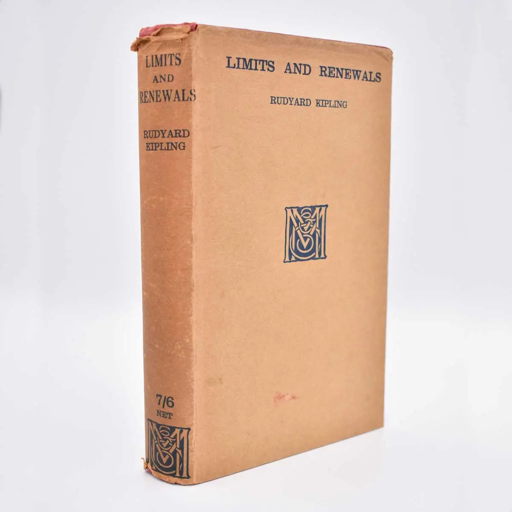
The Manner of Men
Copertina della raccolta: Sovraccoperta della raccolta Limits and Renewals, Macmillan, London 1932, esemplare descritto come prima edizione dal libraio. Racconto apparso sul London Magazine nel settembre 1930.
Fotografia autentica della sovraccoperta della raccolta, con titolo e Rudyard Kipling leggibili. Non copertina autonoma del racconto. Provenienza antiquaria dichiarata, non un’edizione usata da Borges identificata nel video.
Kipling e The Manner of Men, racconto su san Paolo in cui Borges legge le tre preghiere.
Passaggio 47:59 ↗ · Fonti e libro ↗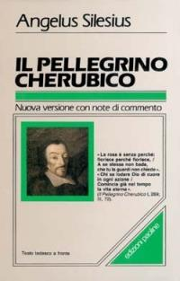
Senza perché (Ohne warum), I,289 del Pellegrino cherubico
Identificazione probabile
Copertina della raccolta: Copertina della raccolta Il pellegrino cherubico, San Paolo, edizione con testo tedesco a fronte, a cura di Giovanna Fozzer e Marco Vannini; ISBN 9788821525261, catalogata terza edizione 2004.
Copertina autentica San Paolo con autore, titolo e citazione della rosa. I cataloghi indicano 743/752 pagine: non fissata una consistenza unica. Il distico I,289 è distinto dalla raccolta intera e dall’edizione Paoline 1989 con diverso ISBN.
Angelus Silesius, rosa senza perché in spagnolo e tedesco, distico I,289 identificato nella raccolta.
Passaggio 51:02 ↗ · Fonti e libro ↗